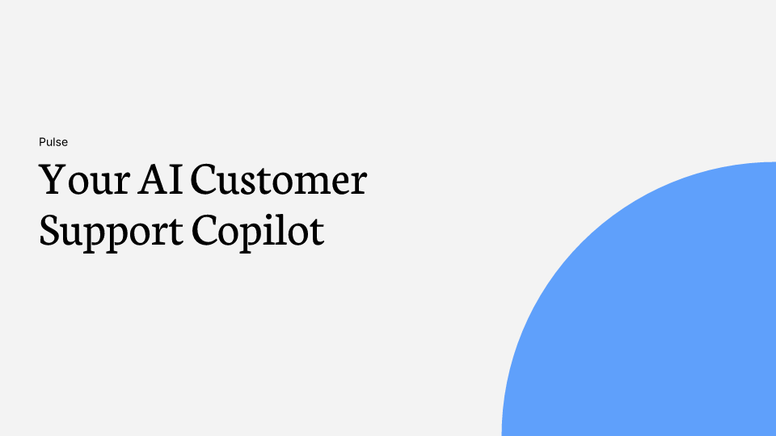
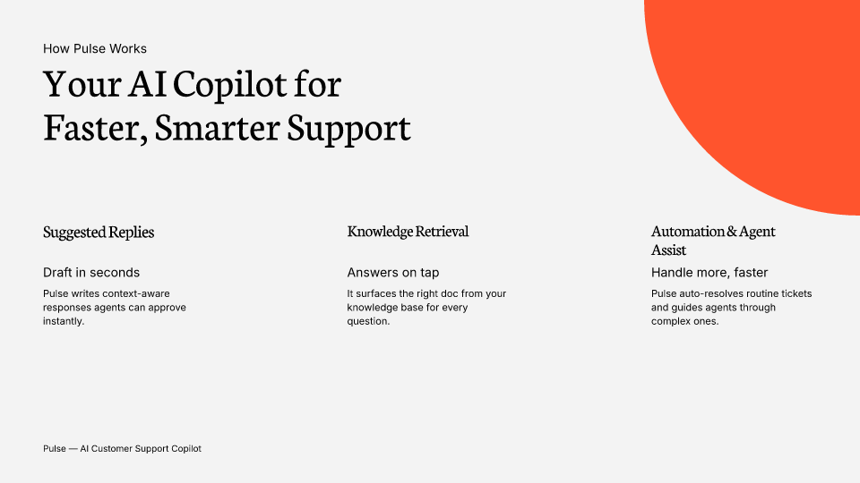
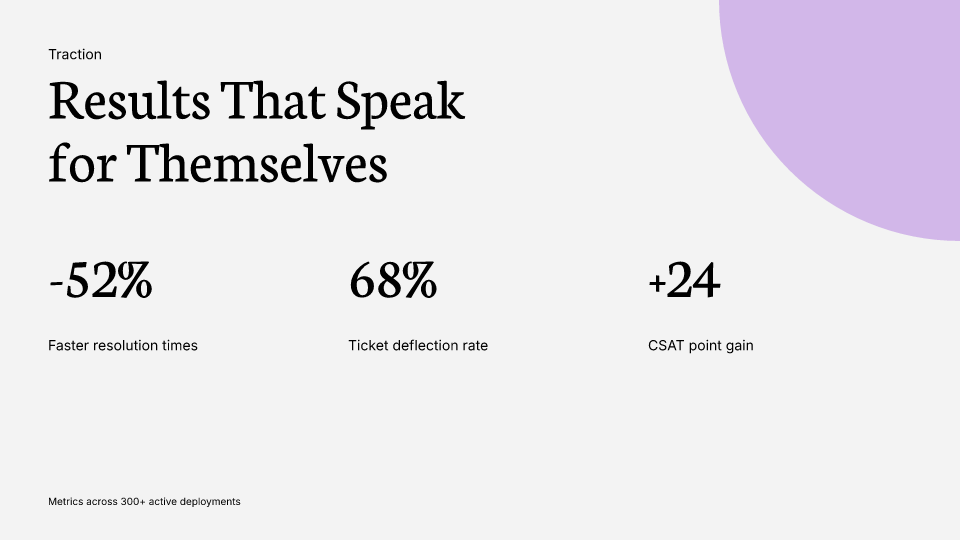
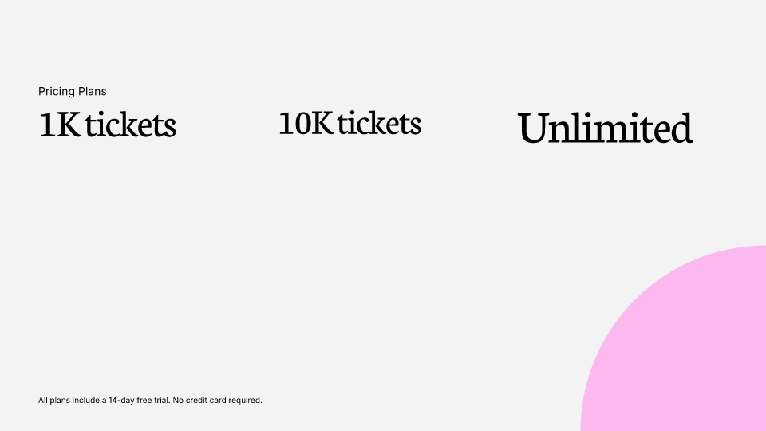
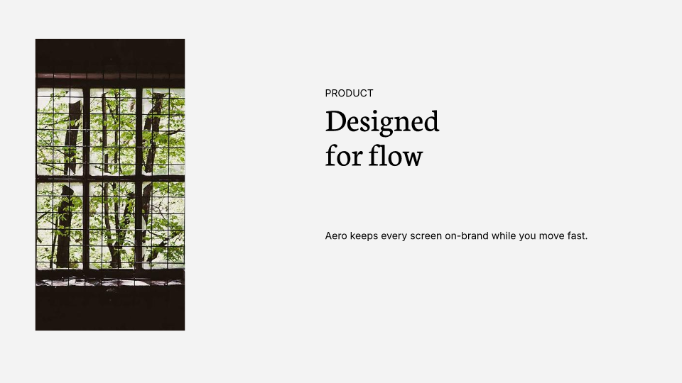
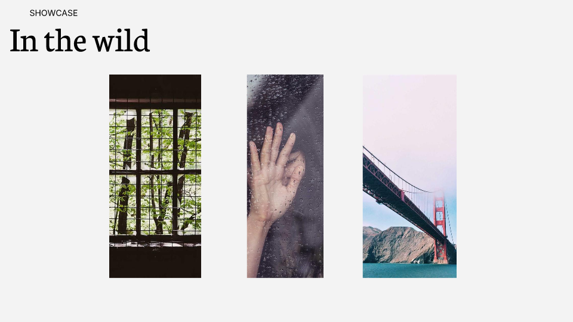
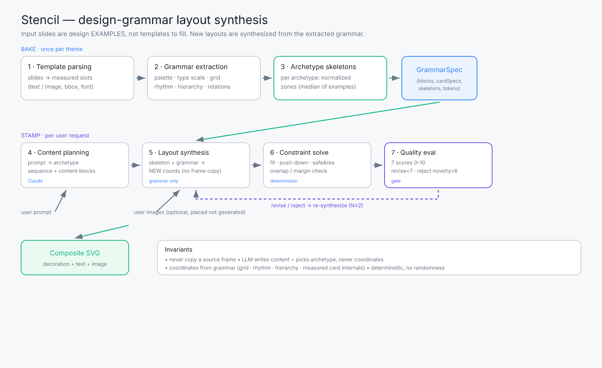
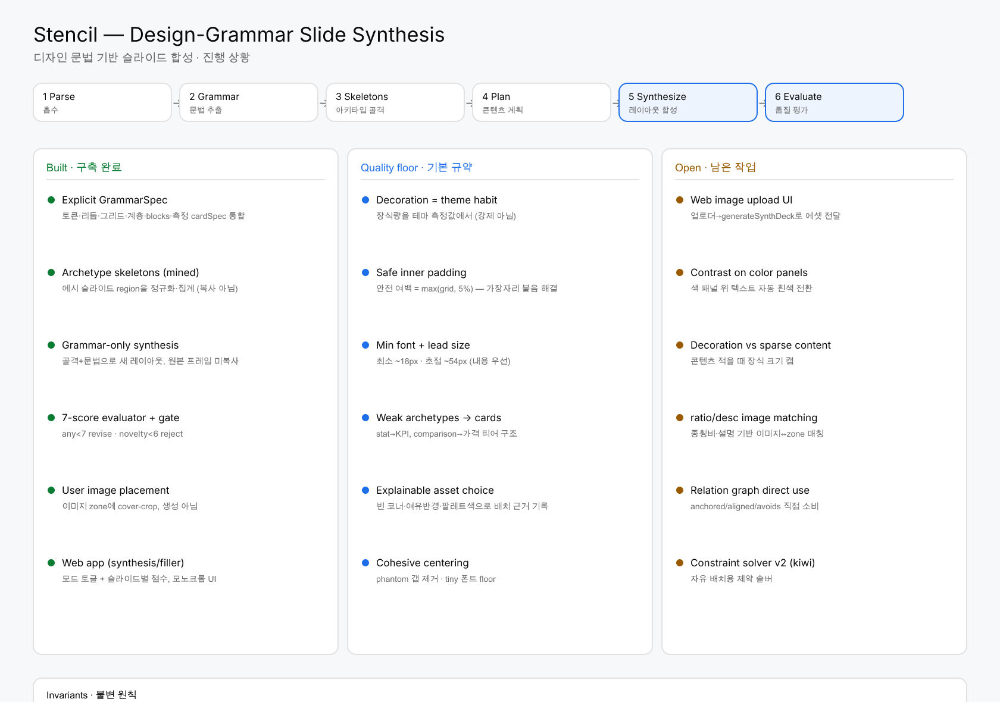

업로드한 슬라이드를 채워 넣을 템플릿이 아니라 디자인 예시 데이터로 본다. 거기서 추출한 문법(간격·정렬·계층·컴포넌트 관계)으로 원본에 없던 새 레이아웃을 합성한다. Templates are example data, not fill-in forms — new layouts are synthesized from the extracted grammar.
사용자 프롬프트(+선택적 이미지)는 STAMP에만 들어간다. BAKE에서 만든 GrammarSpec만 읽고 합성하며, 평가 게이트를 통과하지 못하면 재합성한다.
팔레트·타입스케일·정렬 그리드·간격 리듬·계층·blocks·측정 cardSpec을 하나로 구조화한 명시적 디자인 문법.
아키타입별 예시 슬라이드의 region을 캔버스 분수로 정규화·median 집계한 패턴. 특정 프레임 복사가 아님.
골격을 GrammarSpec만으로 인스턴스화. 좌표는 그리드·리듬·계층에서 생성, 카드 내부는 측정값 재사용.
7지표(문법 일관성·신규성·위계·간격·적합도·유사도 페널티·종합) 채점 + 게이트.any < 7 → revise layout novelty < 6 → reject
장식 양을 테마의 측정 coverage에서 결정(강제 아님). 빈 코너·여유 반경·팔레트색으로 배치 근거를 기록.
테마 무관 기본 규약: 안전 여백(≥5%)·최소 폰트(~18px)·초점 크기(~54px)·비겹침(push-down/safe area).






colorful 그리드 margin 31px로 텍스트가 가장자리에 붙음 → 안전 여백 = max(grid, 5%) 강제.
측정 카드 폰트가 12px까지 축소 → 최소 폰트(~18px)·초점(~54px) 규약.
가격 티어가 한 문장으로 뭉침 → 카드 구조 보장(Starter/Growth/Scale).
마지막 zone 뒤 phantom 갭이 그룹을 미정렬 → 실제 잉크 범위로 중앙 정렬.
모든 슬라이드 같은 블롭 → 테마 측정 coverage 기반(black은 무장식 유지).
인덱스 회전 → "가장 빈 코너 + 여유 반경 + 팔레트색" 근거 기록.

